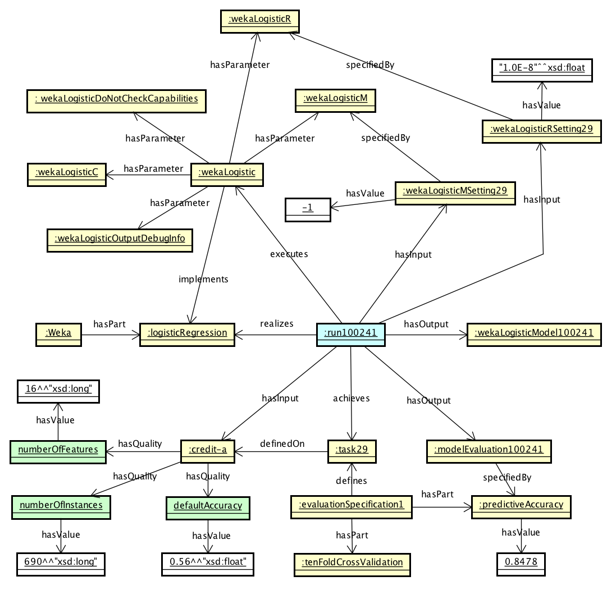

The ML Schema is a simple shared schema that provides a set of classes, properties, and restrictions that can be used to represent and interchange information on data mining and machine learning algorithms, datasets, and experiments.
It can be specialized to create new classes and properties. It can be mapped to more complex, specific ontologies on data mining and machine learning, and also used as a basis for markup languages and data exchange standards.
The namespace for ML Schema terms is http://www.w3.org/ns/mls#.
The OWL encoding of the ML Schema is available here.
The core vocabulary of ML Schema deals with machine learning (ML) algorithms.
The schema can be used to represent the algorithms, the machine learning tasks they address, their implementations and executions, as well as inputs (e.g., data) and outputs (e.g., models) they specify.
This lightweight schema may be used as a basis for ontology development projects, markup languages and data exchange standards.
In particular, it aims to align existing machine learning ontologies and to support development of more specific ontologies with specific purposes/applications.
The main purpose is to increase interoperability by preventing a proliferation of incompatible machine learning ontologies as well as to provide a high-level standard to represent machine learning data. Thus, this scenario leads to a more representative and comprehensive ontology derived from existing state-of-the-art ML schemas.
The schema also defines a relationship between machine learning algorithms and their single executions and experiments and studies encompassing them.
It aims at stimulating the development of standards in order to achieve high level of interoperability among scientific experiments concerning machine learning.
By facilitating the metadata interchange process, the ML Schema may foster reproducible research.
Another goal of ML Schema related to interoperability and reproducible research it to facilitate turning machine learning algorithms and results into linked open data.
1.1 Benefits
Despite recent efforts to achieve a high level of interoperability of Machine Learning (ML) experiments we still run into problems created due to the existence of different ML platforms: each of those have a specific conceptualization or schema for representing data and metadata (Fig1: itens 3 and 4: vertical interoperability). This scenario leads to an extra coding-effort (Fig1: item 2) to achieve both the desired interoperability and a better provenance level as well as a more automatized environment for obtaining the generated results.
To reduce the gap, ML vocabularies and ontologies have been proposed (Fig1: item 5).
MEX Vocabulary (mex-core, mex-algo and mex-perf) has been designed to tackle the problem of managing machine learning outcomes and sharing provenance information particularly on the basic machine learning iterations in a lightweight format.
The gap can be further significantly reduced by achieving interoperability among state-of-the-art (SOTA) schemata of those resources (Figure 1: item 5) i.e. achieving the horizontal interoperability (Figure 1: item 6).
Therefore, different groups of researchers could exchange SOTA metadata files in a transparent manner, e.g.: from OntoDM and MEX (MLSchema.Schema data = mlschema.convert('myfile.ttl', MLSchema.Ontology.OntoDM, MLSchema.Ontology.MEX)).
Figure 1 - Vertical and Horizontal Interoperability across ML Environments.
Besides a higher level of interoperability, it direct benefits ML Ecosystems (e.g.: OpenML) and ML Metadata Repositories (e.g.: WASOTA) which can rely on a more representative standard in their architecures.
In OpenML, MLSchema is used to export all machine learning datasets, tasks, workflows and runs as linked open data (in RDF). This allows scientists to connect the results of their machine learning experiments to other knowledge sources, or to build novel knowledge bases for machine learning research.
1.2 Notational Conventions
Throughout this document, we use Turtle RDF Syntax to express examples showing the use of the schema.
1.3 Namespaces
This section is non-normative.
The following namespace prefixes are used throughout this document.
Table 1: Prefix and Namespaces used in this specification
Other namespace prefixes appearing only in examples.
2. The ML Schema description
The following diagram depicts the core ML Schema. Boxes represent classes of the schema.
Arrows without filled heads represent properties, arrows with empty heads represent subclass relations, and arrows with diamonds represent part of relations.
Figure 2.
The ML Schema core vocabulary.
The diagram depicts Information Entities as yellow boxes, Processes as blue boxes, and Qualities as green boxes.
We will illustrate the ML schema by means of two examples.
Firstly, we illustrate the ML schema with an example derived from the OpenML portal (see Fig. 2).
The example describes entities involved to model a single run of the implementation of a logistic regression algorithm from a Weka machine learning environment.
The referenced individuals can easily be looked up online.
For instance, run 100241 can be found on http://www.openml.org/r/100241.
In the example, the run :run100241 executes the implementation :wekaLogistic of the algorithm :logisticRegression which this execution realizes.
The run has on input the :credit-a dataset and its output is both the model :wekaLogisticModel100241 and the model evaluation :modelEvaluation100241.
The run achieves the task :task29.
The implementation :wekaLogistic implements the algorithm :logisticRegression.
The implementation has five hyperparameters: :wekaLogisticC, :wekaLogisticDoNotCheckCapabilities, :wekaLogisticM, :wekaLogisticOutputDebugInfo, :wekaLogisticR.
Two of these hyperparameters are set for the run :run100241.
The hyperparameter :wekaLogisticM has value set to -1 (expressed via the hyperparameter setting :wekaLogisticMSetting29), and the hyperparameter :wekaLogisticR that has its value set to "1.0E-8"^^xsd:float (expressed via the hyperparameter setting :wekaLogisticRSetting29).
The dataset :credit-a has several characteristics such as: :decisionStumpAUC, :defaultAccuracy, :numberOfInstances, :numberOfMissingValues.
The predictive model :wekaLogisticModel100241 is evaluated (:modelEvaluation100241) based on the specified evaluation measure :predictiveAccuracy.
The value of the evaluation measure modeled via the model evaluation :modelEvaluation100241 is 0.8478.
The task :task29 is defined on the dataset (credit-a) and on the evaluation specification :evaluationSpecification1.
The evaluation specification :evaluationSpecification1 has parts: the evaluation procedure :TenFoldCrossValidation and the evaluation measure:predictiveAccuracy.

Figure 3.
An example illustrating a single run of an ML algorithm implementation.
Secondly, we illustrate ML schema with an example describing ML study (:study1) and the corresponding dataset :mtl_dataset, providing reference to a publication (:article1), and acknowledging the funding body (see Fig. 3) .
This example refers to the article “Multi-Task Learning with a Natural Metric for Quantitative Structure Activity Relationship Learning” by Sadawi et al which reports on the ML study carried out within the Meta-QSAR project (:meta-qsar_project) funded by :EPSRC (:grant1 with number EP/K030582/1).
The referred dataset is freely available in OpenML.
Exposing such metadata may be of use for possible collaborators who may wish to analyse research networks and try to assess the 'trustwothiness' of what is published in the literature.
Such information that a study is done within a funded project, may increase their level of trust to the published results.
Data is a data item composed of data examples and it may be of a various level of granularity and complexity.
With regard to granularity, it can be a whole dataset (for instance, one main table and possibly other tables), or only a single table, or only a feature (e.g., a column of a table), or only an instance (e.g., row of a table), or a single feature-value pair.
With regard to complexity, data examples are characterized by their datatype, which may be arbitrarily complex (e.g., instead of a table it can be an arbitrary graph).
DataCharacteristic is a distinguishing quality or property that distinguish one data from another.
Such characteristics are often statistical ones (e.g., the number of instances or the number of features of a data set). They may be also informationtheoretic measures (e.g., class entropy of a categorical data set) or geometric measures of data complexity (e.g., the highest discriminatory power of any single feature in the data set).
EvaluationMeasure is a measure to assess the performance of the model generated by the process that realizes the task. Examples are predictive accuracy or f-measure.
Hyperparameter is a prior parameter of an implementation, i.e., a parameter which is set before its execution (e.g. C, the complexity parameter, in weka.SMO).
Implementation is an executable implementation of a machine learning algorithm, a script, or a workflow. It is versioned, and sometimes belongs to a library (e.g. WEKA).
Model is a generalization of a set of training data able to predict values for unseen instances. It is an output from an execution of a data mining algorithm implementation. Models have a dual nature. They can be treated as data structures and as such represented, stored and manipulated. On the other hand, they act as functions and are executed, taking as input data examples and giving as output the result of applying the function to a data example. Models can also be divided into global or local ones. A global model has global coverage of a data set, i.e., it generalizes the whole data set. A local model, such as a pattern set, is a set of local hypotheses, i.e. each applies to a limited region of the data set.
ModelCharacteristic is a distinguishing quality or property that distinguish one model from another. An example model characetristic may be interpretabilty or a complexity of the model.
ModelEvaluation is a setting of a value of the performance measure specified by the evaluation specification. It connects a measure specification with its value.
Software is Implemented computer programs, procedures, scripts or rules with associated documentation, possibly constituting an organized environment, stored in read/write memory for the purpose of being executed within a computer system.
Study is a collection of runs that belong together to do some kind of analysis on its results. This analysis can be general or very specific (e.g. a hypothesis test). Can be linked to files, data, that belong to it.
Task is a formal description of a process that needs to be completed (e.g. based on inputs and outputs). A Task is any piece of work that needs to be addressed in the data mining process. In ML Schema, it is defined based on data.
3. The
relationship of ML Schema to other proposed ontologies and
vocabularies
for the domain of machine learning and data mining
In this section, we present the relationship of the MLSchema to other
proposed ontologies and vocabularies for the domain of machine learning
and data mining. The development of MLSchema was highly influenced
from, initially independent, research of
several groups on modeling
the machine learning/data
mining domain. Due to this the classes and
relations present in the ML Schema re-appear
in the current ML/DM ontologies and
vocabularies. In Table 2, we present the mapping between the terms
present in the MLSchema and the current ML/DM ontologies and
vocabularies.
Table 1: Mapping between
the terms between the ML Schema and the different ML/DM
ontologies and vocabularies
For the domain of data mining there are several developed
ontologies, with the aim of providing formal descriptions of domain
entities. One of the proposed ontologies is the OntoDM-core
ontology [OntoDM-core].
In one of the
preliminary versions of the ontology [OntoDM-core-init],
the authors
decided to align the proposed ontology with the Ontology of Biomedical
Investigations (OBI) [OBI]
and
consequently with the Basic Formal Ontology (BFO) at the top
level [BFO],
in terms of top-level classes and
the set of relations. That was beneficial for structuring the domain in
a more elegant way and the basic differentiation of information
entities, implementation entities and processual entities. In this
context, the authors proposed a horizontal description
structure that
includes three layers: a specification layer, an implementation layer,
and an application layer. The specification layer in
general contains information entities. In the domain of data mining,
example classes are data
mining task and data mining
algorithm. The implementation layer in general contains
qualities and
entities that are realized in a process, such as parameters and
implementations of algorithms. The application layer contains
processual classes, such as the execution of the data mining algorithm.
The Exposé ontology
The main goal of [EXPOSE] is to describe
(and reason about) machine learning experiments. It is built on top of OntoDM, as well as top-level ontologies from bio-informatics.
It is currently used in OpenML, as a way to structure data (e.g. database design) and share data (APIs). MLSchema will be used to
export all OpenML data as linked open data (in RDF).
The DMOP ontology
The Data Mining OPtimization Ontology (DMOP) [DMOP]
has been
developed with a primary use case in meta-mining, that is meta-learning
extended to an analysis of full DM processes. At the level of both
single algorithms and more complex workflows, it follows a very similar
modeling pattern as described in the MLSchema.
The MEX vocabulary
The MEX vocabulary has been designed to reuse existing
ontologies (i.e., [PROV-O], [DUBLIN-CORE],
and [DOAP])
for
representing basic machine learning information. The aim is not to
describe a complete data-mining process, which can be modeled by more
complex and semantically refined structures.
Instead, MEX is designed to provide a simple and lightweight vocabulary
for exchanging machine learning metadata in order to achieve a high
level
of interoperability as well as supporting data management for ML
outcomes.
4. Acknowledgements
This section is non-normative.
The editors of this document thank the developers of the tools that were used to create the ML Schema and parts of this document.
Those tools were of major help for developing ML Schema as well as the documentation.
Protégé group from the Stanford University for providing a free, open-source ontology editor and framework for building intelligent systems.
Silvio Peroni for LODE tool for the CSS styling of parts of this page.
Bandrowski, A., Brinkman, R., Brochhausen, M., Brush,
M.H., Bug, B., Chibucos,
M.C., Clancy, K., Courtot, M., Derom, D., Dumontier, M., Fan, L.,
Fostel, J.,
Fragoso, G., Gibson, F., Gonzalez-Beltran, A., Haendel, M.A., He, Y.,
Heiskanen,
M., Hernandez-Boussard, T., Jensen, M., Lin, Y., Lister, A.L., Lord,
P., Malone, J.,
Manduchi, E., McGee, M., Morrison, N., Overton, J.A., Parkinson, H.,
Peters, B.,
Rocca-Serra, P., Ruttenberg, A., Sansone, S.A., Scheuermann, R.H.,
Schober, D.,
Smith, B., Soldatova, L.N., Stoeckert, Jr., C.J., Taylor, C.F.,
Torniai, C., Turner,
J.A., Vita, R., Whetzel, P.L., Zheng, J.
The
ontology for biomedical investigations. PLoS
ONE (2016) 11(4): e0154556.
[DMOP]
C. Maria Keet, Agnieszka Ławrynowicz, Claudia d’Amato,
Alexandros Kalousis, Phong Nguyen, Raul Palma, Robert Stevens, Melanie
Hilario, Data
Mining OPtimization Ontology. Web Semantics:
Science, Services and Agents on the World Wide Web (2015) 32:43-53.